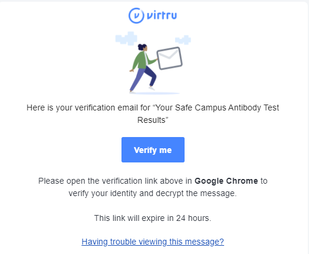

Accessing Your Safe Campus Study Antibody Test Results
Dear Safe Campus Study Participant,
Your antibody test results will be sent to the email you used to register for the Safe Campus Study using Virtru encryption instead of the eTang portal. Please make sure to look for emails from safecampus@berkeley.edu with the subject line “Your Safe Campus Study Antibody Test Results.”
Virtru is an email encryption service that we use to securely communicate your private data to you. Although you will have to go through a couple of extra steps to access your information, it is important that we protect the confidentiality of your results through a HIPAA-compliant platform. For more information on how Virtru protects your data, click here.
1. When you receive a Virtu-encrypted email from the Safe Campus Study, it will look like this. Click Unlock Message, and a new tab will open.
2. When prompted, select your email address:
If your email does not appear, select Use another email address and type in the email you registered for the Safe Campus Study.
Note:Please be sure to verify your identity using the exact email address to which the secure message was sent. If the email was sent to an alias, group address, or distribution list address, you will need to select or enter that exact email address rather than your personal address.
Google users can use their pre-existing credentials to log into the Secure Reader using Sign In with Google. Alternatively, you may choose to sign-in with a one-time verification to receive a verification code.
3. If you selected sign-in with a one-time verification link, check your inbox for your verification email. It will come from verify+xxxxxxxx@virtru.com (with each "x" being a digit). Open the verification email and click View Message to open your message.
Note:In certain instances, such as when cookies are disabled in your browser, you will not have the option to log in with Google, and Virtru will automatically email you a verification code.

4. Once you complete these steps, your message containing your secured antibody test results will open the Virtru Secure Reader in a new tab.